10 PDF
10.1 Overview
In this chapter, you’ll learn how to create PDF documents with Quarto. PDF is the right target when you plan to print, need a single self-contained file to share, or care about precise layout of content on “pages”.
We’ll focus exclusively on creating PDFs via Typst, i.e. format: typst. Typst is a modern typesetting system that comes bundled with Quarto. There are alternatives in Quarto. Most notably, format: pdf which creates a PDF via LaTeX. We think for new authors, its both easier to get started, and easier to advance with Typst:
Typst comes bundled with Quarto, so getting to your first PDF document requires nothing more than adding
format: typst.Typst compiles very quickly, reducing the time it takes to preview your changes.
Typst’s scripting language is similar to other languages you may already know (like R and Python) which makes it easier to understand existing templates, and customize your documents.
There are situations where LaTeX may be a better fit:
You need to work with existing LaTeX templates, like a journal article template.
You already rely on LaTeX packages for advanced typesetting of math or equations.
If you are in these situations, you may find the PDF Basics guide in the Quarto documentation a better place to start.
Readers who use screen readers and other assistive technologies generally have a smoother experience with HTML (Chapter 9) than with PDF. If that describes part of your audience — or if accessibility is a primary concern — HTML is often the better target. Accessible PDFs are possible (we’ll cover that in Section 10.11), but the tooling ecosystem is younger.
In the next section, you’ll create your first PDF document with format: typst. Then, you’ll cover the types of content you’ll most likely need in your first few documents: navigation, citations, math, code blocks, and computational outputs.
In Section 10.11 you’ll learn the keys to creating accessible PDFs, and in Section 10.12 how to customize the page layout, fonts, and colors of your document.
Finally, you’ll learn where to head next if you need to go beyond Quarto’s default Typst options.
10.2 Your first PDF document
Creating a PDF is as simple as adding format: typst to your YAML header:
---
format: typst
---Here’s a short, but complete example, with some common content types — headings, a table, and cross-references:
train-punctuality.qmd
---
title: "Route Punctuality Report"
author: "Dr. Sarah Okonkwo"
format: typst
---
## On-time performance
@tbl-punctuality shows the on-time rate for six routes during Q4, broken down by peak and off-peak services.
| Route | Peak (%) | Off-peak (%) |
|:------------------|:--------:|:------------:|
| Central–North | 82 | 91 |
| Central–East | 78 | 88 |
| Harbour–Airport | 71 | 85 |
| West Loop | 88 | 94 |
| Coastal Express | 65 | 79 |
| University Line | 90 | 96 |
: On-time rates by route and service period {#tbl-punctuality}
Off-peak services consistently outperform peak services across all routes, with the Coastal Express showing the largest gap.
## Recommendations
Based on the results in @tbl-punctuality:
- Investigate causes of delays on the Coastal Express and Harbour–Airport routes
- Review peak-hour scheduling on Central–East to close the gap with off-peak performance
- Use the University Line and West Loop as benchmarks for network-wide improvementTo create the PDF, render, either by Previewing in your IDE, or in the terminal:
Terminal
quarto render train-punctuality.qmdBehind the scenes, Quarto converts your markdown source into Typst’s own markup language (.typ), then uses the bundled Typst to compile the .typ to PDF. The result is train-punctuality.pdf, the rendered PDF, shown in Figure 10.1.
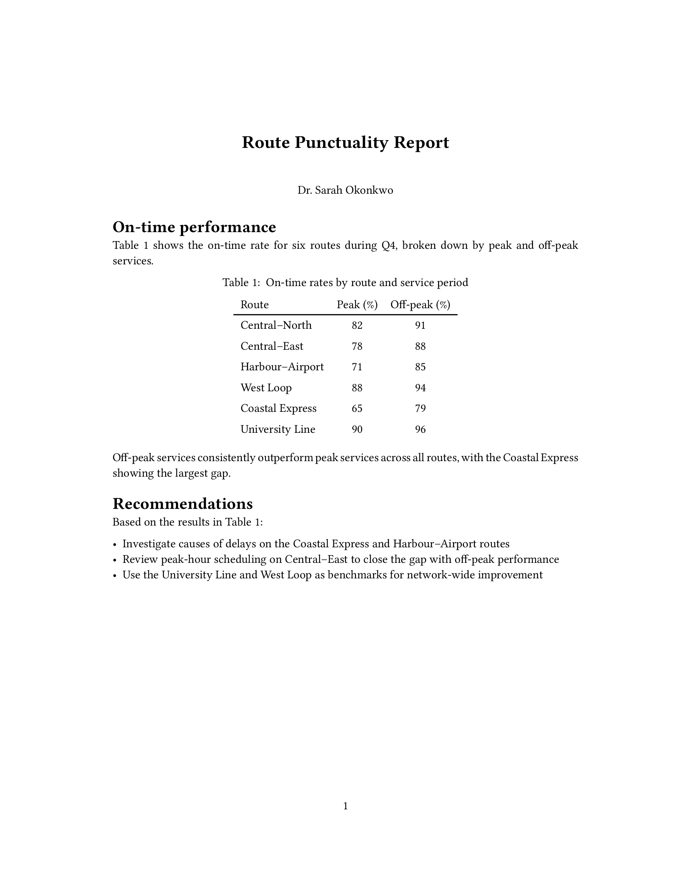
train-punctuality.qmd
You can see the headings, table and cross-references all “just work”. In the following sections, we’ll cover other common content types you commonly need in your first few documents. You can also check out Chapter 12 for a more comprehensive set of features available across formats, including format: typst.
You can try swapping to format: typst in any existing Quarto document. Most markdown features will carry over, but beware of features that introduce interactivity, like code folding, or hover effects, these won’t be supported in PDF because PDF is a static format.
10.4 Links
You can also use markdown link syntax to add links directly to other sections in your document, or to external resources:
train-punctuality.qmd
Revisit the [Summary](#summary) for context, and see the [Q1 on-time dashboard](https://transit.example.com/ontime/2026-q1) for the full breakdown by route.Both render as plain text in the default template — they’re clickable in a PDF viewer, but visually indistinguishable from the surrounding prose. You’ll learn how to style them in Section 10.12.
10.5 Citations
Citations require a bibliography file holding reference metadata. A common format for this is BibTeX (.bib):
references.bib
@report{railregulator2023,
author = {{Office of Rail and Road}},
title = {Passenger Rail Performance: Annual Statistics},
year = {2023},
institution = {Office of Rail and Road}
}To cite an item in the bibliography, specify the file in bibliography and use the @ syntax in your text:
train-punctuality.qmd
---
bibliography: references.bib
---
The industry standard for on-time performance is 90% [@railregulator2023].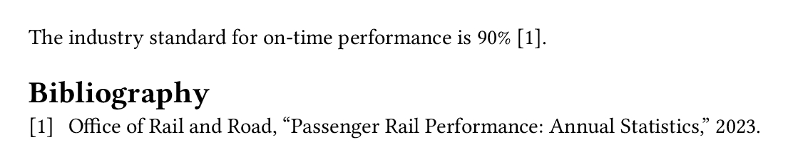
Citations in format: typst use Typst’s native processing, and consequently, a different default citation style to other Quarto formats. You can specify the citation style with the csl option. Set csl: chicago-author-date to get the same Chicago author-date style as HTML output:
train-punctuality.qmd
---
format: typst
bibliography: references.bib
csl: chicago-author-date
---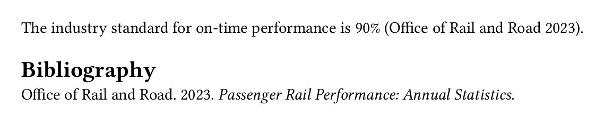
You can read more about citations in Section 12.11, including about various @ syntax variations.
10.6 Mathematical equations
When you author to Typst from Quarto, use TeX math syntax to write your equations. Use single dollar signs ($...$) for inline math, and double dollar signs ($$...$$) for display equations:
equations.qmd
The mean on-time rate, $\bar{x}$, summarises performance across all routes.
$$
\bar{x} = \frac{1}{n}\sum_{i=1}^{n} x_i
$$ {#eq-mean}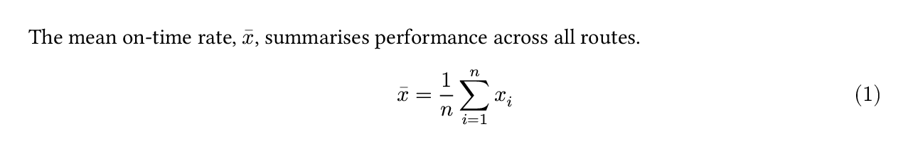
Typst’s has it’s own (non-TeX) math notation, but you won’t need to learn it, because Quarto converts TeX math to Typst math for you. This keeps math portable — the same TeX syntax renders across HTML, Typst and other formats without edits.
You can read more about writing equations, including cross-referencing, in Section 12.9.
10.6.1 Alt text
Alt text makes an equation accessible to screen readers, and is required to meet the PDF/UA-1 standard. You can add alternative text to cross-referenced display equations with an alt= attribute:
equations.qmd
$$
\bar{x} = \frac{1}{n}\sum_{i=1}^{n} x_i
$$ {#eq-mean alt="Sample mean: sum of all values divided by the number of observations"}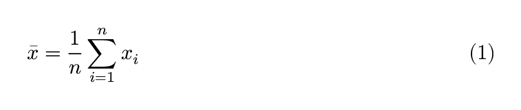
There is currently no way to add alt text to inline math in format: typst.
10.6.2 Theorems
When you use one Quarto’s theorem environments you’ll get special styling in Typst. For example, to declare a theorem, you wrap it in a fenced div with an identifier that starts with #thm-:
theorem.qmd
::: {#thm-chebyshev}
## Chebyshev's Inequality
For a random variable $X$ with mean $\mu$ and variance $\sigma^2$, for any $k > 0$:
$$P(|X - \mu| \geq k\sigma) \leq \frac{1}{k^2}$$
:::The default theorem appearance is simple: a bold title followed by italic body text. Switch to a different flavor with theorem-appearance:
_quarto-fancy.yml
format:
typst:
theorem-appearance: fancyThe available options are simple, fancy, clouds, and rainbow:
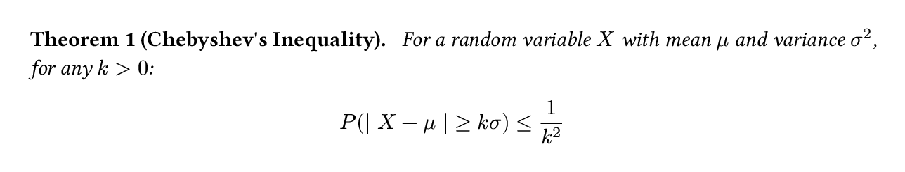
simple
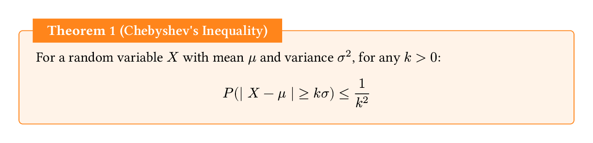
fancy
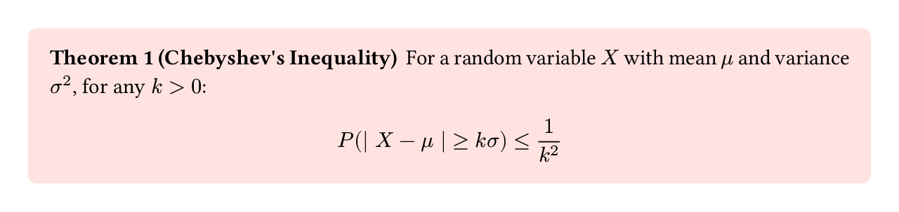
clouds
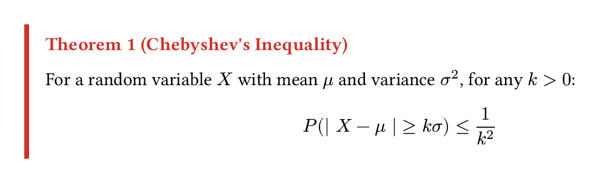
rainbow
theorem-appearance to style theorems.
theorem-appearance applies to every theorem-like element Quarto recognizes, not just thm-. You can find all the available types in Section 12.9.1. Under fancy, clouds and rainbow, different types get different accent colours so you can tell a definition from a theorem at a glance.
10.7 Code blocks
When you include a code block it will get automatic syntax highlighting based on the language you specify. For example, you can set r on a code block:
report.qmd
Compute on-time rates from counts for each route:
```r
on_time <- c(142, 98, 201, 87, 165)
total <- c(154, 110, 215, 95, 178)
rate <- round(on_time / total * 100, 1)
cat("On-time rates (%):", rate)
```Then in your PDF, the block gets R syntax highlighting as shown in Figure 10.8. Executable code cells that are echoed in your document get the same treatment, so your code and its output are styled consistently.
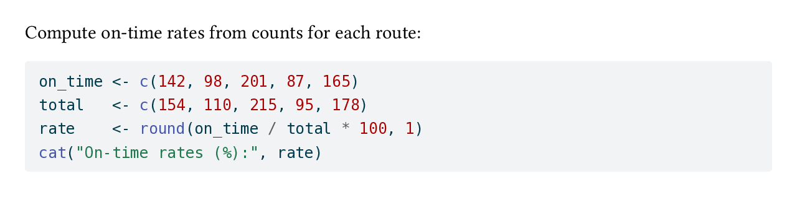
arrow syntax highlighting of an R code block in a Typst document
The default highlighting theme is arrow. Pick a different one with syntax-highlighting:
report.qmd
---
format:
typst:
syntax-highlighting: github
---Supported themes include: a11y, arrow, pygments, tango, espresso, zenburn, kate, monochrome, breezedark, haddock, atom-one, ayu, breeze, dracula, github, gruvbox, monokai, nord, oblivion, printing, radical, solarized, and vim.
Typst also has a native highlighter, if you’d prefer to use it, you can set syntax-highlighting to idiomatic:
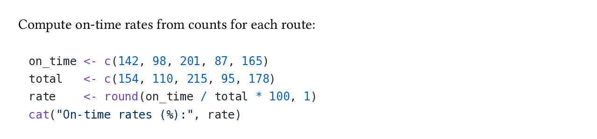
github
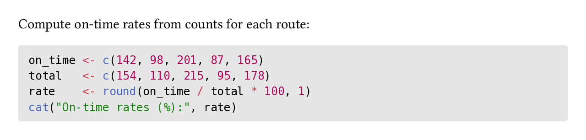
idiomatic
github theme for syntax highlighting and Typst’s native idiomatic theme.
10.7.1 Filename
[CVW] Regenerate screenshot and remove this once quarto-dev/quarto-cli#14170 is merged.
You can add a filename attribute to label the code block:
report.qmd
Compute on-time rates from counts for each route:
```{.r filename="analysis.R"}
on_time <- c(142, 98, 201, 87, 165)
total <- c(154, 110, 215, 95, 178)
rate <- round(on_time / total * 100, 1)
cat("On-time rates (%):", rate)
```10.8 Computational outputs
Computational code cells work in format: typst just as they do in other formats. Outputs like figures, tables, and inline values are inserted into the PDF at the point of the cell.
For example, here’s a cell that produces a figure:
report.qmd
```{r}
#| label: fig-punctuality
#| fig-cap: On-time rate by route
#| fig-alt: A bar chart of on-time rates by route, showing values between roughly 85% and 95% across the Northern, Central, Circle, District, and Jubilee routes.
#| echo: false
library(ggplot2)
ggplot(trains, aes(x = route, y = rate)) +
geom_col(fill = "#4e79a7") +
labs(x = NULL, y = "On-time rate (%)") +
theme_minimal()
```report.qmd
```{python}
#| label: fig-punctuality
#| fig-cap: On-time rate by route
#| fig-alt: A bar chart of on-time rates by route, showing values between roughly 85% and 95% across the Northern, Central, Circle, District, and Jubilee routes.
#| echo: false
from plotnine import ggplot, aes, geom_col, labs, theme_minimal, element_blank, theme
(
ggplot(trains, aes(x="route", y="rate"))
+ geom_col(fill="#4e79a7")
+ labs(x=None, y="On-time rate (%)")
+ theme_minimal()
+ theme(axis_title_x=element_blank())
)
```The cell uses echo: false, so the code itself is hidden in the rendered output; the figure appears directly below the surrounding prose with a numbered caption, as shown in Figure 10.10.
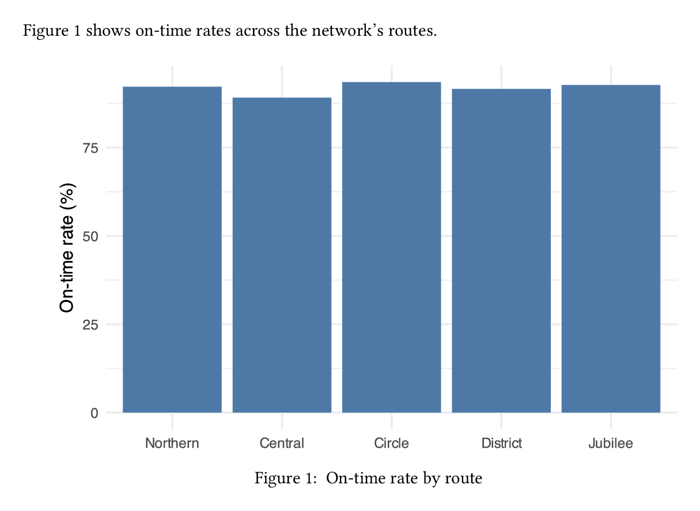
While most computational outputs render as expected, there a few quirks to be aware of, which we’ll cover the sections below: figure format, table formats and long tables.
10.8.1 Figure format
Quarto defaults to SVG for computational figures in Typst. SVG is a vector format, so it scales well and looks crisp at any size. However, it can be slow to render when a figure contains many elements, like a busy scatterplot with thousands of points. Set fig-format in the document header to switch default format, e.g. to png for raster output:
report.qmd
---
format:
typst:
fig-format: png
---10.8.2 Table formats
Any code that produces a markdown, HTML, or raw Typst table will render to a table in your PDF. Often it’s not easy to tell which format you’ve ended up with. The easiest way to check is to add keep-md to your header and examine the resulting .md file:
report.qmd
---
format:
typst:
keep-md: true
---For simple tables, code that outputs a markdown table, will often be the best choice. Markdown tables are converted to native Typst tables by Quarto, and it will inherit your documents styling, like fonts and colors, so the table will blend with the rest of your document.
The advantage of HTML tables, is that cell-level formatting, like coloring that depends on the data, will be preserved. For example, these code blocks use the gt package in R and great_tables in Python to produce tables with colored cells:
report.qmd
```{r}
library(gt)
gt(trains) |>
cols_label(route = "Route", on_time = "On time", total = "Total", rate = "On-time rate (%)") |>
fmt_number(columns = rate, decimals = 1) |>
data_color(columns = rate, palette = "magma", reverse = TRUE)
```report.qmd
```{python}
from great_tables import GT
(
GT(trains)
.cols_label(route="Route", on_time="On time", total="Total", rate="On-time rate (%)")
.fmt_number(columns="rate", decimals=1)
.data_color(columns="rate", palette="magma", reverse=True)
)
```When rendered to Typst the cell level coloring survives, as shown in Figure 10.11. However, notice the font is now the gt/great_tables default san-serif font.
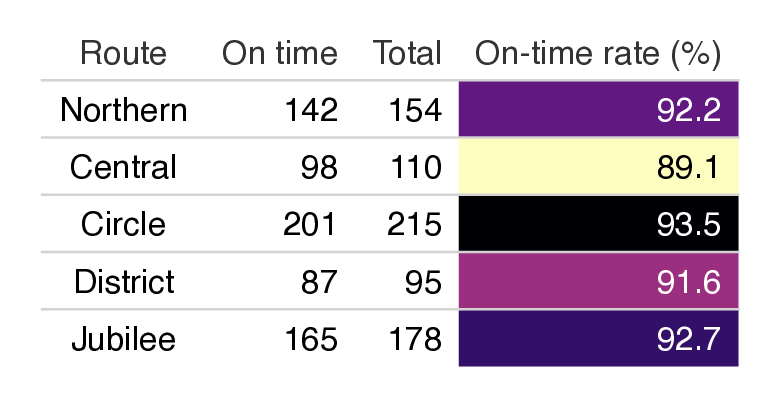
gt table rendered in Typst
Most packages that produce HTML tables will have a way to customize the styles in the tables they produce. You’ll need to look into the package documentation to find out how.
Packages that produce raw Typst tables, may get the best of both worlds, inheriting the document’s fonts and styling, while allowing for cell-level formatting. However, there are currently very few packages that produce raw Typst tables.
10.8.3 Long tables
When your code creates a very long table, you’ll want it to break across pages, rather than being cut off at the bottom of the page. If you haven’t set label: and tbl-cap:, i.e. it isn’t cross-referenceable, the table will break across pages by default.
If you have set label: and tbl-cap:, the table won’t be breakable by default, and will overflow the page instead of breaking across it, as shown in Figure 10.12.
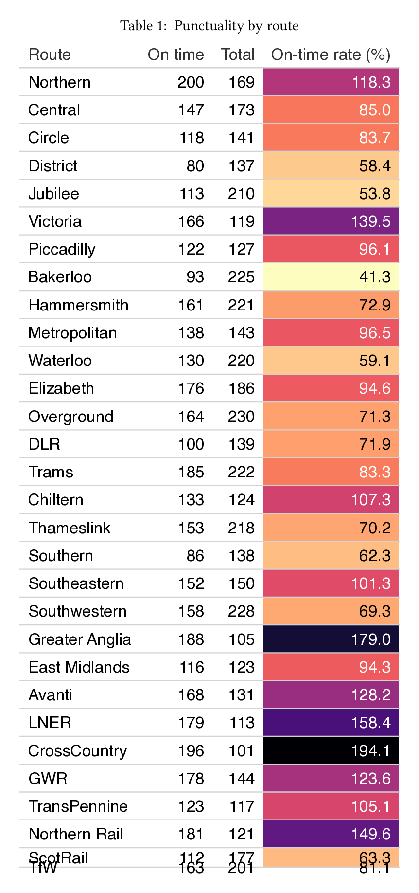
To let cross-referenceable tables break across pages, add a raw Typst block after your document header:
report.qmd
---
title: "Route Punctuality Report"
---
```{=typst}
#show figure: set block(breakable: true)
```Now the long table flows cleanly across pages, with the table header repeated on each:
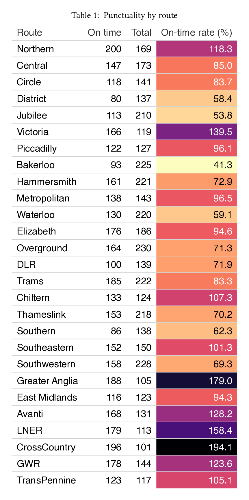
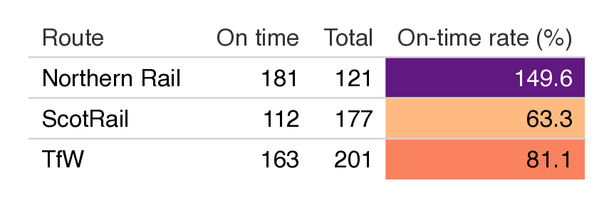
You’ll learn more about raw Typst blocks in the next section.
10.9 Raw Typst blocks
If you explore the Typst documentation, you’ll find a rich syntax that can go beyond what Quarto markdown supports. For anything, that Quarto doesn’t support you can use Typst syntax directly inside a raw block (Section 12.16).
The contents of a raw block pass through to Typst without being processed by Quarto, and are ignored in any other format. For example, you can use a raw Typst block to add status badge that uses the rect, align, and text Typst functions:
report.qmd
Service status:
```{=typst}
#rect(width: 4cm, height: 1cm, fill: rgb("#2e5090"), radius: 4pt)[
#align(center + horizon, text(white)[Normal])
]
```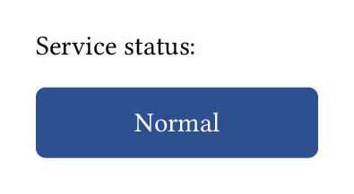
Another good usecase for raw blocks is to customize appearance with set and show rules as you’ll see in Section 10.12.3.
10.10 Full-width or margin content
By default, your document content will sit in the body column of your PDF document. Sometimes you may want to break out of that column, and use the full page width, or put content into the right margin.
Add the .column-margin class to a fenced div to push content into the margin as an aside:
report.qmd
Peak-hour delays on the Harbour–Airport route were the largest single contributor to the Q4 miss.
::: {.column-margin}
The regulator's on-time threshold is 90%.
:::
West Loop and University Line consistently cleared 88% across all service periods.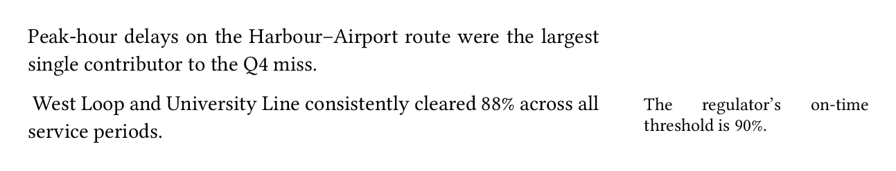
Use the .column-page class to widen content across the page, extending beyond the body text:
report.qmd
On-time rates during Q4, broken out by service period and day type:
::: {.column-page}
| Route | Peak Weekday (%) | Off-peak Weekday (%) | Peak Weekend (%) | Off-peak Weekend (%) | Total services |
|:------------------|:----------------:|:--------------------:|:----------------:|:--------------------:|:--------------:|
| Central–North | 82 | 91 | 86 | 94 | 12,480 |
| Central–East | 78 | 88 | 84 | 92 | 11,220 |
| Harbour–Airport | 71 | 85 | 79 | 89 | 9,840 |
:::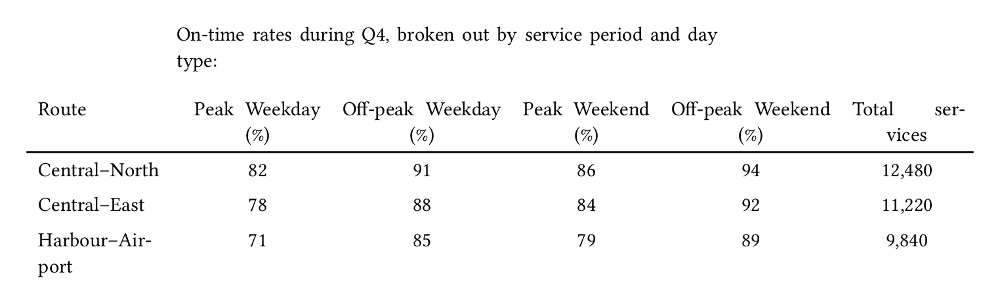
In Typst, the column classes give you four distinct widths beyond the default body:
.column-margin— content sits in the margin column.column-body-outset— slightly wider than the body, extending into the margins.column-page-inset— almost the full page width.column-page— extends to the page margins
Each of the wider three has -left and -right variants for one-sided expansion. Figure 10.17 shows the extent of each.
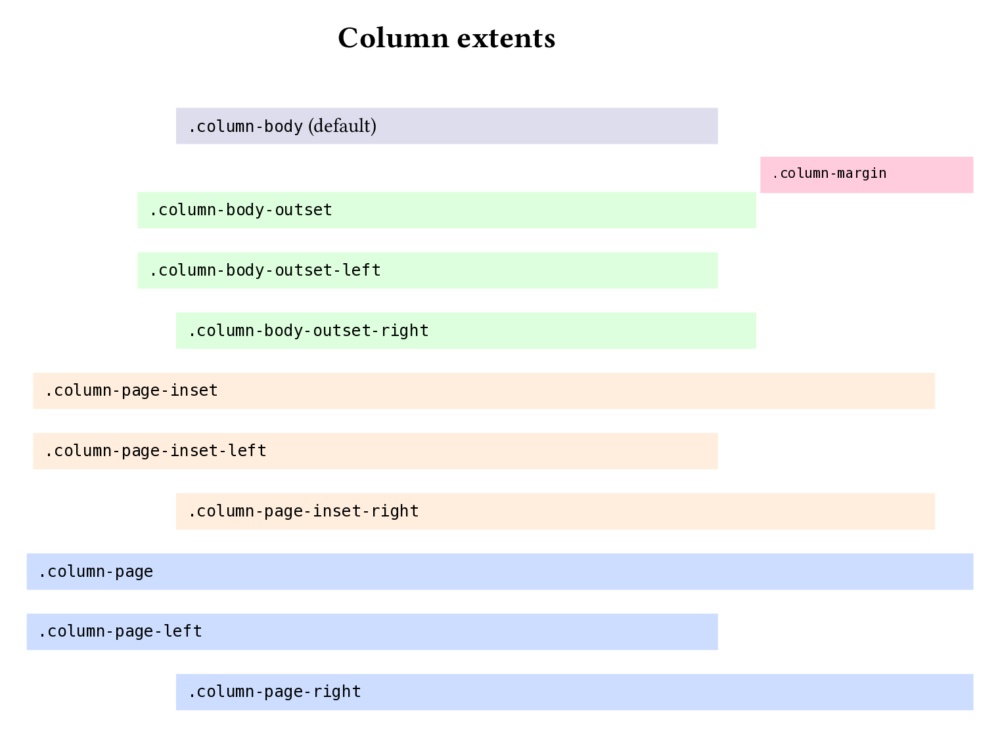
For document-wide defaults, set tbl-column and fig-column in the document header. Both apply to every cross-referenceable table or figure in the document — markdown pipe tables, list tables, and computational outputs alike. Tables and figures without an identifier are unaffected, as are non-cross-referenceable images and tables.
report.qmd
---
format: typst
fig-column: page
tbl-column: page
---When place content outside the default body column, the layout mechanism of your document changes from a simple single body area, to a layout using the Typst marginalia package to manage the margin allocation. You’ll learn more about managing this layout in ?sec-layout-marginalia.
10.11 Making accessible PDFs
Accessibility is about increasing the reach of your documents. A PDF that’s well-structured can be used by more people – like readers who navigate with a screen reader, who zoom to 400%, who can’t tell red from green, or who depend on assistive technology to work through a long document.
The Web Content Accessibility Guidelines (WCAG) are the most widely accepted standard for what counts as “accessible”. When a regulation says your document must be accessible, it almost always points to these guidelines. However, since the WCAG was written for the web, and is deliberately technology-agnostic, it doesn’t directly map to requirements for PDFs.
For PDF documents, you’ll more likely be working with a PDF standard. PDF/UA-1 is one such standard, supported by Typst, that translates WCAG into testable rules for PDFs. You can target this standard by setting pdf-standard: ua-1 in your document header:
report.qmd
---
title: "Route Punctuality Report"
author: "Dr. Sarah Okonkwo"
lang: en
format:
typst:
pdf-standard: ua-1
---When you do so, your document is marked as targeting this standard, and is checked twice during the rendering process:
By Typst itself, when it compiles the
.typto.pdf.By Quarto, which uses veraPDF to validate the resulting
.pdfagainst the PDF/UA-1 standard.
You’ll need to install veraPDF to get the second check:
Terminal
quarto install verapdfFor a document that passes validation, you’ll see [typst] compile step completeing with DONE, and a PASSED message from veraPDF:
Terminal
[typst]: Compiling train-punctuality.typ to train-punctuality.pdf...DONE
[verapdf]: Validating train-punctuality.pdf against PDF/UA1...PASSEDFor a document that fails validation, you’ll see an error from the [typst] compile step along with an error from Typst that describes the failure:
Terminal
[typst]: Compiling train-punctuality-not.typ to train-punctuality-not.pdf...error: PDF/UA-1 error: missing alt text
...
ERROR: Typst compilation failedBecause the Typst compilation fails, you won’t get the .pdf output.
10.11.1 What does it mean to pass PDF/UA-1 validation?
Passing PDF/UA-1 validation is a useful first step to ensuring an accessible document, but it doesn’t mean your document is accessible. There are two big caveats to be aware of:
Passing PDF/UA-1 validation does not mean your document meets PDF/UA-1
There are rules in PDF/UA-1 that cannot be checked automatically. For example, consider the rule:
PDF/UA-1: 7.1-8:
dc:titleclearly identifies the document.
The dc:title element is set by title in your document header. Validation can check dc:title is set, but it can’t check it “clearly identifies the document”. As the human, meeting rules that require human judgement is your responsibility.
Meeting PDF/UA-1 does not mean your document meets WCAG
The rules in PDF/UA-1 cover structural requirements that are necessary for accessibility, but they don’t cover all the content-level requirements in WCAG. For example, consider the rule:
WCAG 2.1: 1.4.3 Contrast (Minimum): The visual presentation of text and images of text has a contrast ratio of at least 4.5:1, except for the following: …
This rule has no PDF/UA-1 equivalent, so you can fully meet all machine and human checkable PDF/UA-1 requirements without meeting WCAG. Some tools can check additional WCAG rules but these are beyond the automated checks you’ll get from Quarto.
10.11.2 Accessibility best practices
10.11.2.1 Use semantic structure
Your resulting PDF needs to tag content based on what it is, not how it looks: a section heading needs to be tagged as a heading not just be big and bold. Quarto’s markdown encourages this naturally — when you write ## Recommendations, Quarto knows this is a second-level heading, and it gets tagged as such in the PDF. Be careful not to skip heading levels, e.g. jumping from ## to #### without an intervening ###. Skipping levels can make navigation difficult for screen readers.
10.11.2.2 Communicate a logical reading order
Quarto encourages this naturally too: the implied reading order is the same as the top-to-bottom order of elements in your .qmd. For example, a figure is “read” based on its location in your .qmd, not where it ends up in the .pdf. As long as you write your .qmd to read from top-to-bottom, you’ll meet this requirement.
10.11.2.3 Set required metadata
PDF/UA-1 validation will flag missing required metadata. For example, you must set title in your document header to pass validation.
Some metadata is filled with default values so you’ll pass validation without setting them. One example is lang, the document language, which is set to en-US by default. If your document is written in a language other than English, set lang appropriately.
10.11.2.4 Provide alternative text for all images and equations
Validation will flag missing alt text — but you still need to write meaningful descriptions yourself. Every image and every equation must have alt text. For images, add alt text with the fig-alt attribute or code cell option (see Section 12.8). For display equations, add alt text with the alt attribute in the equation’s attribute block (see Section 10.6.1). There is currently no way to add alt text to inline math in format: typst, so avoid inline math, or use raw Typst for inline math, if you need to meet PDF/UA-1.
10.11.2.5 Use informative titles, headings, and alternative text
No automated check can tell whether a field’s content is meaningful — only that the field is set. “My document”, “Section 4”, or “chart” pass every automated check and leave your reader with nothing to navigate by. It’s your responsibility to ensure these accurately describe their content.
10.11.2.6 Use color choices that are readable
No automated check covers color or contrast — these are your responsibility. Foreground and background must have sufficient contrast, both in textual elements (body text, headings, code blocks, syntax highlighting) and in any parts of a figure important for understanding it (points, bars, lines, key icons etc.). Meaning shouldn’t depend on color alone — supplement with labels, patterns, or shape.
10.12 Customizing appearance
While the default appearance of format: typst is great for many “working” documents, you’ll likely need to customize the appearance for published documents.
In this section, you’ll learn how to customize the page layout (Section 10.12.1) with document options, and fonts and colors with brand.yml (Section 10.12.2). For customization beyond document options and brand, you may need to use Typst’s native set and show rules in a raw block (Section 10.12.3).
Finally, if none of the above techniques reach your needs, you’ll need to add your own template partials or a completely new template. While the details of this are beyond this book, we give some guidelines on when you might to reach for this, and how to get started in Section 10.12.4.
10.12.1 Page layout
You can control some aspects of your page layout by specifying options in your document header. Figure 10.18 illustrates those that apply regardless of how you lay out your body content: papersize, margin, and page-numbering.
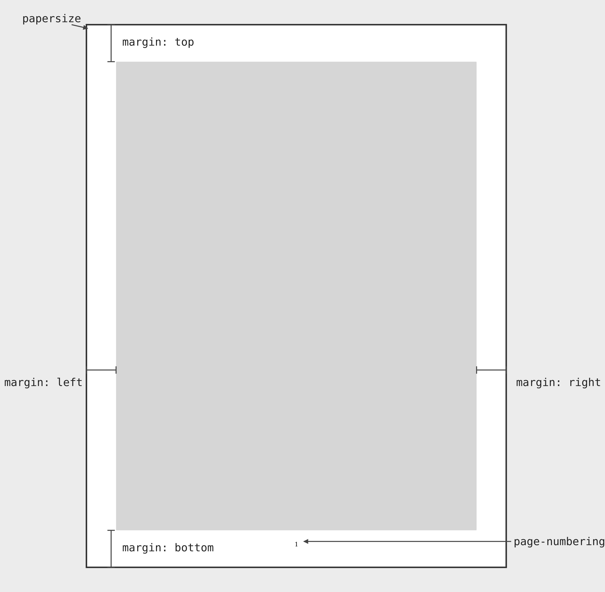
Two other options control how body content is arranged as illustrated in Figure 10.19. These options don’t work well together so you should pick one approach:
Arrange body content automatically into multiple columns with
columnsExplicitly arrange content into columns with the
.column-*classes (Section 10.10) and control their layout withmargin-geometry.
columnsmargin-geometrycolumns, and using the .column-* classes with margin-geometry.
The following sections go into the details of each option.
10.12.1.1 papersize
Set paper size with papersize:
report.qmd
---
format:
typst:
papersize: a4
---Use any of Typst’s supported paper sizes like a4, a5, us-legal, jis-b5 etc. The default is us-letter.
10.12.1.2 margin
Set page margins with margin. You can specify any combination of top, bottom, left, right, or the shortcuts x (for left and right) and y (for top and bottom):
report.qmd
---
format:
typst:
margin:
top: 2cm
bottom: 2cm
left: 3cm
right: 3cm
---You can use anything Typst will recognize as a relative length and includes simple lengths with units like 2cm, 1in, 254mm, ratios like 10%, and combinations like 25% + 1cm.
10.12.1.3 page-numbering
Use page-numbering to set the page number format (or false to suppress page numbers):
report.qmd
---
format:
typst:
page-numbering: "1 / 1"
---page-numbering follows Typst’s numbering-pattern syntax — 1 for the current page, a second 1 for the total.
The footer region, where page numbers appear, is inside the bottom margin. If your margins need to be completely free of content, consider increasing the bottom margin to account for the room the page number needs.
Quarto doesn’t expose document options for page headers or running titles in Typst output. For those, use a raw Typst block with a set rule (Section 10.12.3).
10.12.1.4 columns
Set the number of columns the body text is arranged in with columns:
report.qmd
---
format:
typst:
columns: 2
---Content will flow automatically into two columns. These columns don’t combine well with full width or margin content, so avoid using .column-* classes.
10.12.1.5 margin-geometry
When you place content outside the body column, e.g. in the margin or across the full page-width, as desribed in Section 10.10, the layout switches to use the Typst marginalia package.
In this layout, the left and right side of the pages are split into several regions as illustrated in Figure 10.20. The margin-geometry option is used to control the widths of each region. You can specify widths for far, width and separation under inner and outer corresponding to the left and right side of the page respectively.
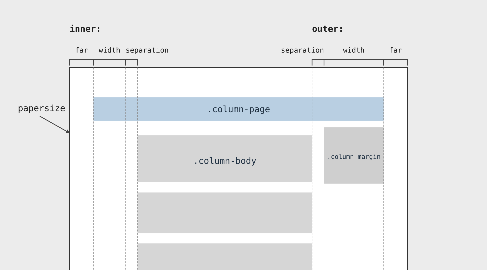
margin-geometry controls on each side: far, width, and separation.
For example, to remove the inner margin column and use a symmetric one-inch far margin on both sides:
report.qmd
---
format:
typst:
margin-geometry:
inner:
far: 1in
width: 0in
separation: 0.25in
outer:
far: 1in
width: 1.5in
separation: 0.25in
---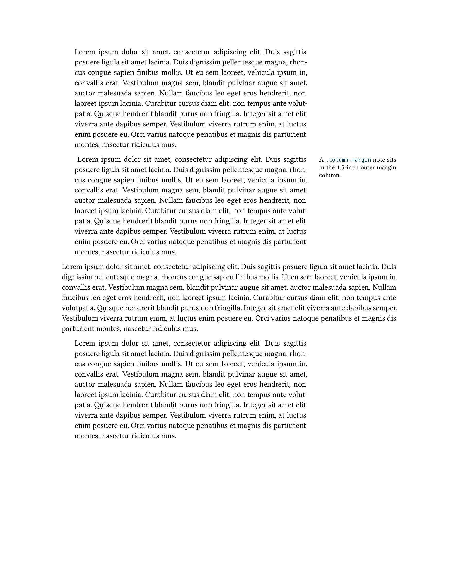
.column-body text is inset with no inner margin column, the .column-margin note sits in the 1.5-inch outer column, and the .column-page block reaches the 1-inch far margin on each side.
The width of the region correspinding to .column-body is whatever remains of the page wdith as specified by papersize. So, in this example, using the default papersize of us-letter, the body area is:
\[ \underset{\text{page width}}{8.5^"} - \left(\underset{\texttt{far}}{2(1^")} + \underset{\texttt{separation}}{2(0.25^")} + \underset{\texttt{outer.width}}{1.5^"}\right) = 4.5^" \]
Top and bottom margins are controlled with the margin option as shown in ?sec-typst-layout-margin.
10.12.2 Fonts and colors with brand
The easiest way to customize fonts and colors is to use brand.yml. Add a _brand.yml file next to your document and set the body font under typography.base, and the page background and body text color under color:
_brand.yml
typography:
base: Helvetica
color:
background: "#fdf6e3"
foreground: "#073642"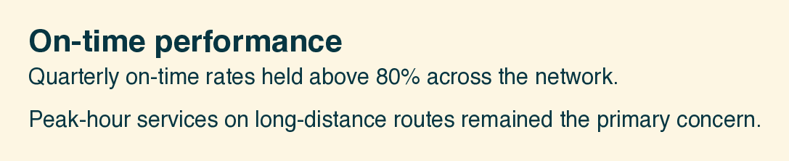
Customize headings independently with typography.headings. You can set family, color, and weight:
_brand.yml
typography:
headings:
family: Helvetica
color: "#b58900"
weight: bold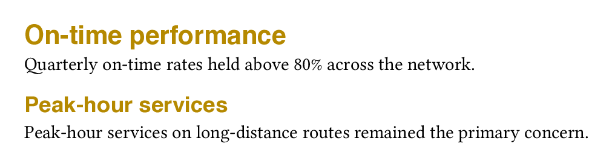
Set the code font with typography.monospace.family. Declare the font under typography.fonts and pick a source — system for an already-installed font, or google to have Quarto fetch it at render time:
_brand.yml
typography:
fonts:
- family: JetBrains Mono
source: google
monospace:
family: JetBrains Mono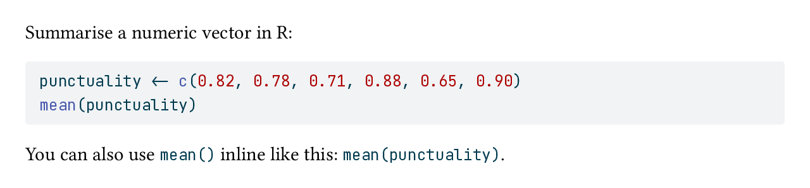
<- shown as the ← ligature
monospace covers both inline and block code. To target them separately, use monospace-inline and monospace-block.
Color the code-block background with typography.monospace-block.background-color. Pair it with a syntax-highlighting theme whose token colors contrast against the background you picked — for example, a11y-dark for a dark background:
_brand.yml
typography:
monospace-block:
background-color: "#1e1e2e"report.qmd
---
format:
typst:
syntax-highlighting: a11y-dark
---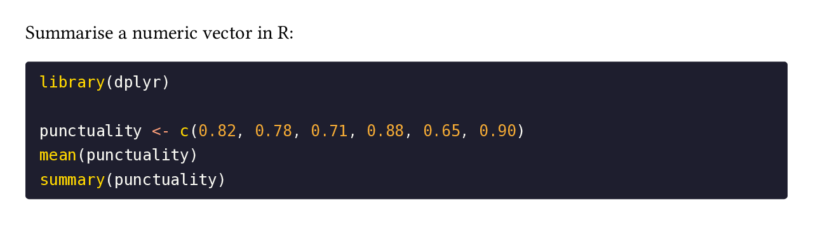
a11y-dark syntax highlighting
Code-block background and syntax-highlighting aren’t independent knobs. The default highlighting theme is tuned for a light code background; on a dark background its argument-gray tokens fade into the page. Pick a theme whose token palette matches your chosen background.
syntax-highlighting: github is a second gotcha — it currently ignores monospace-block.background-color entirely, emitting its own code-block fill that the brand override doesn’t reach.
Style links with typography.link. decoration accepts Typst’s line-stroke keywords (underline, overline, strike), and color sets the fill:
_brand.yml
typography:
link:
decoration: underline
color: "#2e5090"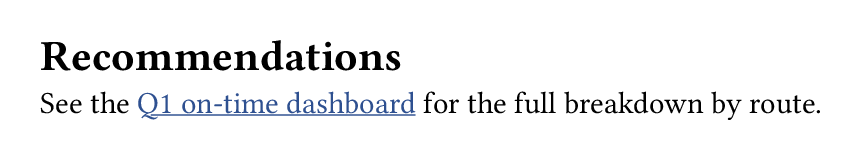
10.12.3 Use raw typst
When YAML and brand keys don’t reach what you want, drop into a raw Typst block. Two kinds of rule cover most cases:
- Set rules —
#set X(...)— change the default parameters for elementX. - Show rules —
#show X: ...— transform how elementXrenders, often by setting parameters on a different element.
Both take effect from the point they appear onwards. Put them after your document header to apply most widely.
10.12.3.0.1 Set rules
Add a running header to every page with #set page(...):
report.qmd
```{=typst}
#set page(header: align(right, text(fill: gray, [Route Punctuality Report])))
```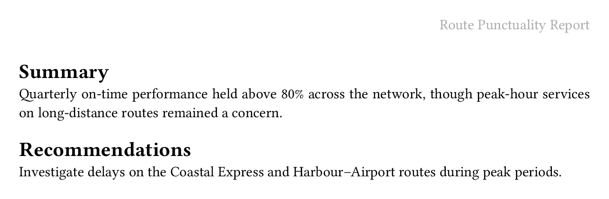
#set page() starts a new page
Typst treats #set page() as a page break — the current page finishes, and the new settings take effect on the page that follows. A raw block at the top of the body therefore only applies from page 2 onwards. To reach page 1, override the page.typ partial instead (see Custom templates).
Widen paragraph line spacing with #set par(...):
report.qmd
```{=typst}
#set par(leading: 1em)
```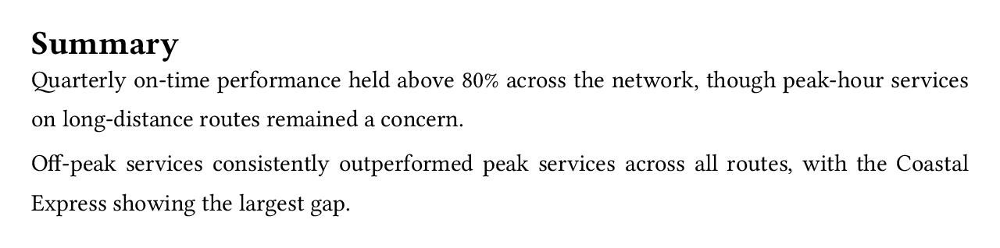
Tint body text with #set text(...). Because set rules apply forward from the point they appear, you can open a scope, drop a paragraph in, then revert with a second set rule:
report.qmd
```{=typst}
#set text(fill: rgb("#4a4a4a"))
```
Quarterly on-time performance held above 80% across the network...
```{=typst}
#set text(fill: black)
```
Off-peak services consistently outperformed peak services...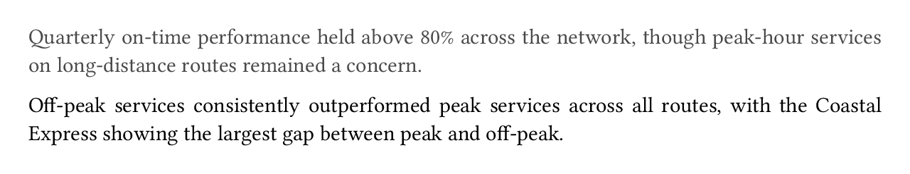
10.12.3.0.2 Show rules
Reach for a show rule when the parameter you want lives on a different element. Heading spacing, for example, is a block parameter, not a heading one — #show heading: set block(...) bridges the two:
report.qmd
```{=typst}
#show heading: set block(above: 2em, below: 0.5em)
```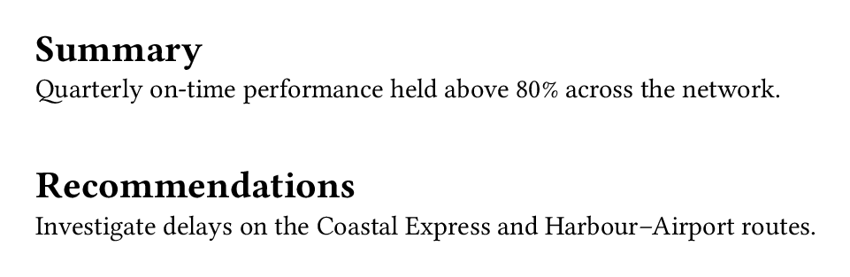
Narrow the target with .where(). Here level-2 headings go italic, while level-1 stays upright:
report.qmd
```{=typst}
#show heading.where(level: 2): set text(style: "italic")
```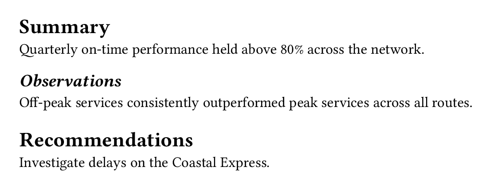
Quarto’s Typst format defaults to shift-heading-level-by: -1, so markdown ## renders as Typst level 1 and ### as level 2. That’s why the rule above targets level: 2 to match a ### heading in the source. Override with shift-heading-level-by: 0 in your YAML if you’d rather the numbers line up.
Quarto exposes _brand.yml colors to raw Typst via the brand-color dictionary. With
_brand.yml
color:
primary: "#2e5090"every heading can be painted in the brand primary:
report.qmd
```{=typst}
#show heading: set text(fill: brand-color.primary)
```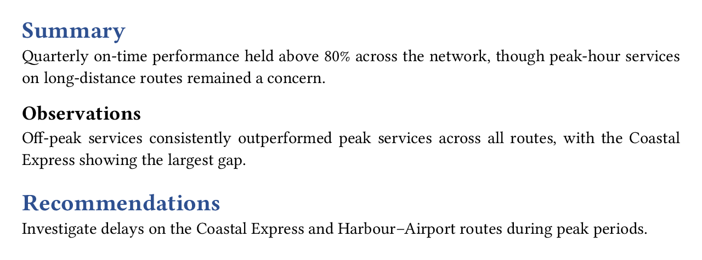
Show rules can also reshape an element by returning new content. To footnote every external link with its URL — the effect Pandoc’s links-as-notes gives for LaTeX — rewrite each link to its body followed by a footnote. Gate on the destination type so internal section links stay untouched:
report.qmd
```{=typst}
#show link: it => if type(it.dest) == str {
[#it.body#footnote([#raw(it.dest)])]
} else {
it
}
```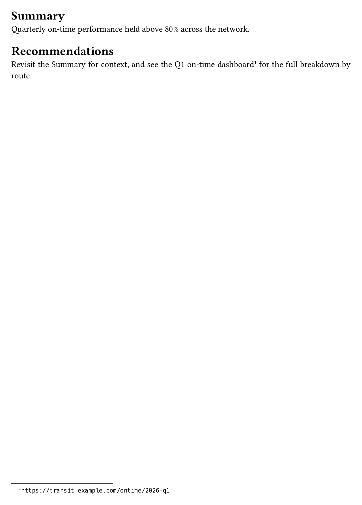
Internal links have a label destination rather than a string, so the type(it.dest) == str check skips them. Using it.body instead of it avoids recursing into the show rule.
10.12.4 Custom templates
When set and show rules aren’t enough — or when you want to reuse the same customizations across many documents — reach for a custom template. A template bundles document-wide styling into a reusable extension your project can depend on.
[CVW] Cover the page.typ partial. It’s the file that turns YAML like papersize, margin, page-numbering, and columns into a #set page() call; overriding it is the supported way to reach the Typst page parameters Quarto doesn’t expose — running headers and footers are the motivating example.
You can read more about building custom Typst templates in the Quarto Typst customization guide.